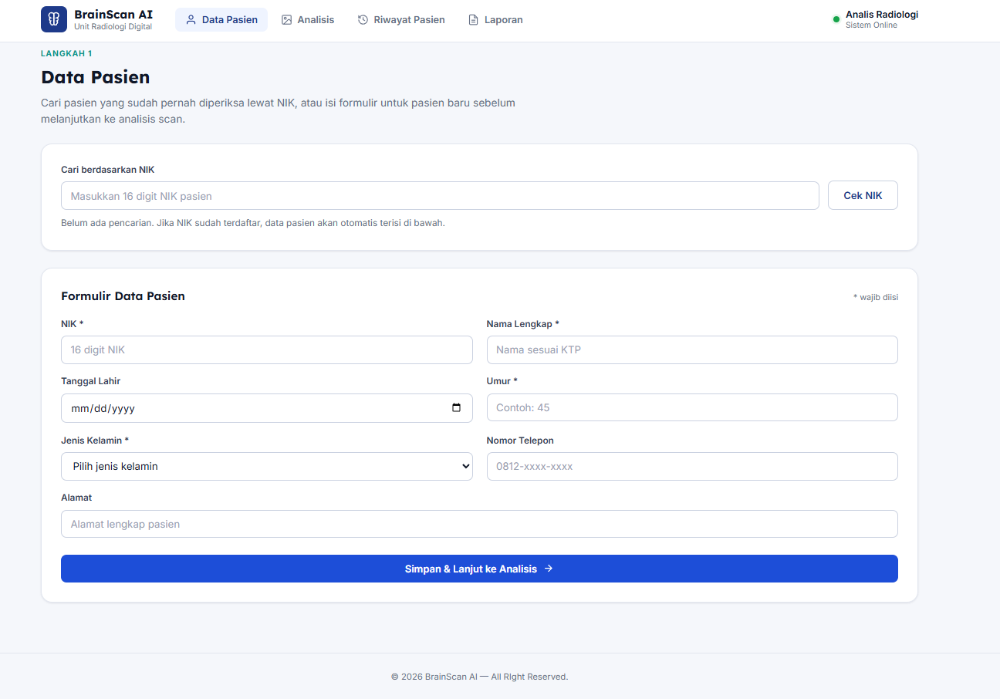
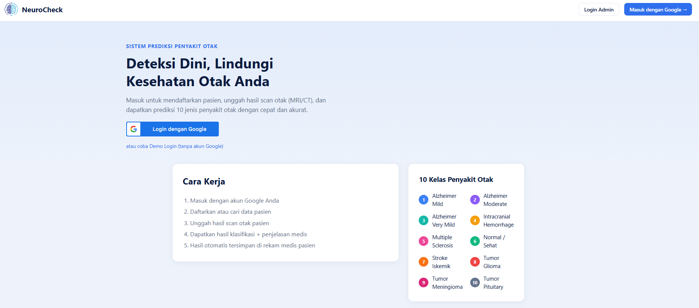

Ringkasan Projek PKL
Halaman ini berisi hasil pengerjaan dan dokumentasi sistem aplikasi web berbasis AI yang dikembangkan selama masa Praktik Kerja Lapangan (PKL). Pengembangan dibagi menjadi dua tahap rilis utama (Versi 1 dan Versi 2) untuk menunjukkan proses evaluasi serta peningkatan kualitas sistem.
Daftar Hasil Projek
Klik gambar/kartu untuk membuka tautan live
Projek PKL - Version 1 - 5 Brain Disease Class
v2.0Pengembangan aplikasi web berbantuan AI versi 2. Berfokus pada pembangunan struktur dasar sistem dan alur pemrosesan data tugas.
- Implementasi modul interaksi AI dasar.
- Struktur form input data yang fungsional.
- Penyusunan tata letak antarmuka standar.

Projek PKL - Version 2 - 10 Brain Disease Class
v3.0 TerbaruPengembangan dan penyempurnaan sistem aplikasi web berbantuan AI versi 3. Dilakukan perbaikan antarmuka (UI/UX) dan optimalisasi pemrosesan data.
- Redesain antarmuka agar lebih modern dan bersih.
- Peningkatan responsivitas pada layar smartphone.
- Optimalisasi performa pemrosesan AI.
Kedua tautan projek di atas aktif dan dapat diakses secara langsung melalui peramban (browser). Projek Versi 2 menampilkan tahapan awal pengerjaan, sedangkan Projek Versi 3 merupakan hasil revisi dan penyempurnaan fitur selama masa PKL.